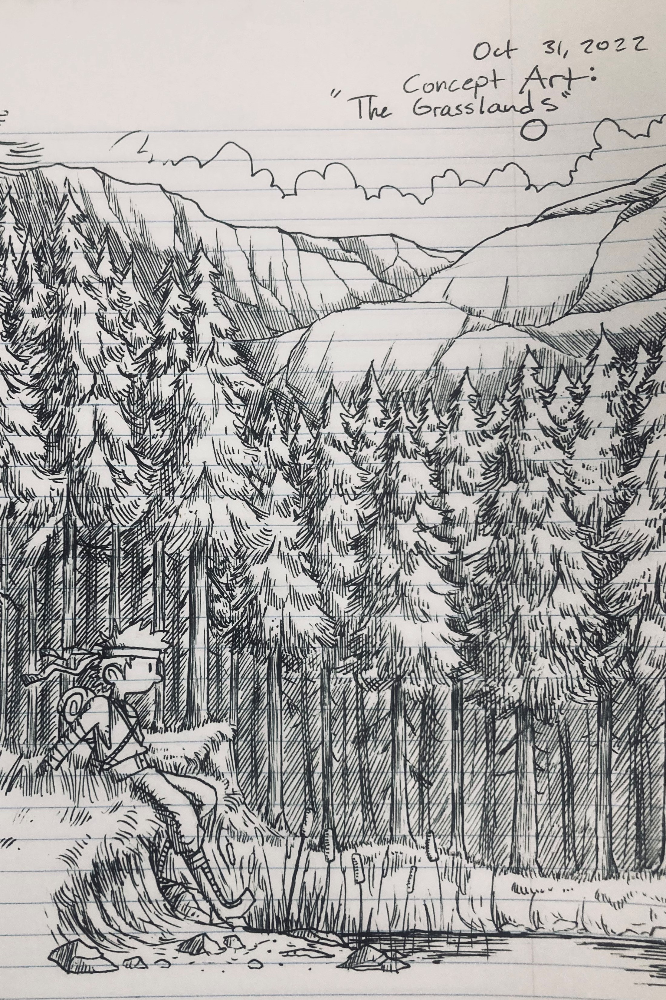

VAMPIRE BABES (September 15, 2022)
I've lately been getting a little hyped up for Halloween, (I know, it's still September.) But with the spooky season nearly in the air, I've had this future installment on the brain. It won't be here for some time, I'm guessing it'd be either book four or five depending on how closely I follow the timeline I've written up. I wanted to make this so I could design some nasty-looking spiders based on deep sea crustaceans, and of course the vampire babes themselves. The designs are good I think, but the colors I was trying out didn't add up right at all, to the point that I'm only posting the linework for now. Overall this is something like how I'd want the book cover to look, though I want to get rid of the empty space that's been left here and fill it with other monsters and creeps. I'm sure that'll be easy once I figure out just who and what the crew is gonna be up against in this installment. While I love the vibe and the visuals, the actual arc for this book is still just a half-finished idea that needs a lot of outlining and developing.

BOOK TWO SKETCHES (September 13-14, 2022)
If you follow me on any social media, you may know that my digital art program has been giving me a hard time lately. It's working fine again, thankfully, but while it was updating its drivers or whataver it did to fix itself I went back to my sketchbooks to work on Book Two. These sketches are usually done in the work van during down time at my day job. Still not sure on an actual title for it, (nor am I really sure what I'll call Book One, but I'd like them each to have a sub-title underneath "Dungeons and Disasters.") As is usual with my actual notes and sketchbook work, I can't show much of it without giving away things that will spoil the story. But I will say it is largely centered around Connor and friends trying to charter a ship to the Elven Empire. This book, like "Night of the Vampire Babes," probably won't be seen for awhile. Book one will be around 200 pages upon completion, and the rough draft is only completed to page 113, currently. So, there's no telling just when we'll see Book Two begin.
CONNOR AT 12 AND 22 (October 3, 2022)
This probably isn't something we'll see in the actual book, purely conceptual. If we do see it, it'll be years from now in some kind of short epilogue, when everything else is finished. I just really like that trope of seeing a young protagonist as an older, grizzled version of themself, and wanted to draw something like that for Connor. I'm not sure on how he would lose his leg or eye, or whether he'll actually lose them 'on screen,' (or whether he loses them at all). By the end of the journey Connor is certainly a changed boy, damaged physically and mentally, but I don't know if we'll see these injuries during the actual book, or if they just happen during a time skip. I kind of like the open ended aspect of the time skip though, let's the reader speculate on the sorts of monsters and bad guys he's run across since he was young. I also want to rework the prosthetic, I like the design I've got, but I'm thinking it should be something more steam-punky, like something the Dwarves would have come up with rather than the Elves.
"WE NEED A BOAT" (September 18, 2022)
Been thinking about Book Two again, specifically the sorts of people they run into while asking around about transport to the Elven Empire. (It's not really a good fantasy story unless there's a rough tavern full of undesirables somewhere in it.) You'll probably notice the lines on Connor and friends are a lot cleaner looking, that's because by now I've got a pretty good idea of what they're supposed to look like. When I'm sketching from nothing though, as in trying to make a new character design, I tend to scribble a bit, until I've got something that "looks about right." It's also quicker for spitballing ideas about designs. For example, I erased and redrew the man smoking a ciggy through his neckhole three times, trying something different each time I drew him. Before I settled on the neckhole design, I considered having him packing a fat lip of chaw, and even smoking a crack-like substance. I may go back and update this later if I go over it with finished linework.
COMPARISON (September 19, 2022)
This is pretty self explanatory, just goes to show how different the final draft can be from the the original designs. There have been quite a few new panels squeezed in over the course of me working on this, and even some new pages. Page 24 didn't exist until I started the final draft, for example. You can see in the top left that I had originally just wanted him to exit the royal-restroom and immediately merge with the nobles, but I really liked the bit with the rain water flooding out and had to squeeze it in. You can also see that I had planned to make the royalty speak in some kind of awful over-the top accent, and that I was still relying on a narrator to tell the story. It can be difficult to correct yourself if you don't distance yourself from the work a little, no matter how unbiased you believe yourself to be. I've had a lot of time since drawing that page of the rough draft to step back and actually look at it impartially though, and I believe I've made changes for the better. There's still a lot of work to be done, especially around pages 90-100. (But that's a ways away.)

THE GRASSLANDS/THE BIG GREEN (October 31, 2022)
I actually started this three or four days ago while on lunch break at recruit school, only finished it today. Drawing forests in particular has always done a great deal to calm me and/or ease my nerves, which is how I came to work on this in the first place. I've had some people ask me how I came to be able to draw, and that's a large part of it. It's only natural that I got pretty good at it after doing it all the time, you could say the same thing about any hobby.
I think I'd like to actually go through and make concept art for all the big locations that Connor and friends travel to as well. I've got a few ideas in mind, namely the four primary continents (and maybe even a world map of some sort.) We'll see. The Big Green (as it's most commonly reffered to,) is a massive stretch of rolling hills, mountains, plains, and evergreen forests. While it's beautiful country and comfortably warm for most of the year, it's also home to many dangerous creatures and roaming bands of brigands. It is centrally located between all the continents, and by far the most largely travelled to and from for trade reasons.